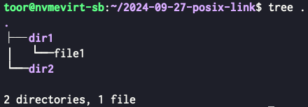
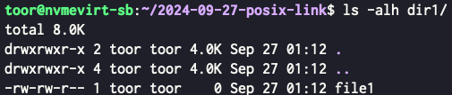
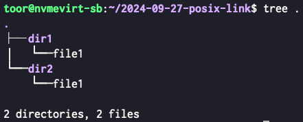
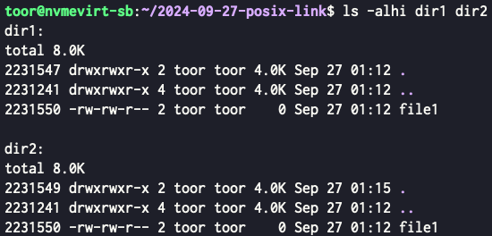
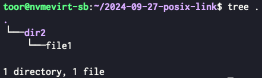
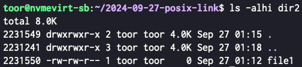

<!DOCTYPE html>
<html><head><title>Link (File System)</title><meta charSet="utf-8"/><meta name="viewport" content="width=device-width, initial-scale=1.0"/><meta property="og:title" content="Link (File System)"/><meta property="og:description" content="참고한 것들 레드햇 서울대 김진수 교수님 고급운영체제 강의 (Spring 2024) 파일을 연결하기 § Link 는 말 그대로 File 을 연결하는 것인데, 이것이 중요한게 아니고 두 가지의 link 방식이 중허다. Hard Link 와 Soft Link (Symlink) Hard Link § Hard link 는 Inode 와 파일 이름을 연결하는 것을 말한다."/><meta property="og:image" content="https://mdg.haeramk.im/static/og-image.png"/><meta property="og:width" content="1200"/><meta property="og:height" content="675"/><link rel="icon" href="../../../../static/icon.png"/><meta name="description" content="참고한 것들 레드햇 서울대 김진수 교수님 고급운영체제 강의 (Spring 2024) 파일을 연결하기 § Link 는 말 그대로 File 을 연결하는 것인데, 이것이 중요한게 아니고 두 가지의 link 방식이 중허다. Hard Link 와 Soft Link (Symlink) Hard Link § Hard link 는 Inode 와 파일 이름을 연결하는 것을 말한다."/><meta name="generator" content="Quartz"/><link rel="preconnect" href="https://fonts.googleapis.com"/><link rel="preconnect" href="https://fonts.gstatic.com"/><link href="../../../../index.css" rel="stylesheet" type="text/css" spa-preserve/><link href="https://cdn.jsdelivr.net/npm/katex@0.16.0/dist/katex.min.css" rel="stylesheet" type="text/css" spa-preserve/><link href="https://fonts.googleapis.com/css2?family=IBM Plex Mono&amp;family=Gowun Batang:wght@400;700&amp;family=Gowun Dodum:ital,wght@0,400;0,600;1,400;1,600&amp;display=swap" rel="stylesheet" type="text/css" spa-preserve/><script src="../../../../prescript.js" type="application/javascript" spa-preserve></script><script type="application/javascript" spa-preserve>const fetchData = fetch(`../../../../static/contentIndex.json`).then(data => data.json())</script></head><body data-slug="gardens/os/fs/terms/Link-(File-System)"><div id="quartz-root" class="page"><div id="quartz-body"><div class="left sidebar"><h1 class="page-title "><a href="../../../..">Madison Digital Garden</a></h1><div class="spacer mobile-only"></div><div class="search "><div id="search-icon"><p>Search</p><div></div><svg tabIndex="0" aria-labelledby="title desc" role="img" xmlns="http://www.w3.org/2000/svg" viewBox="0 0 19.9 19.7"><title id="title">Search</title><desc id="desc">Search</desc><g class="search-path" fill="none"><path stroke-linecap="square" d="M18.5 18.3l-5.4-5.4"></path><circle cx="8" cy="8" r="7"></circle></g></svg></div><div id="search-container"><div id="search-space"><input autocomplete="off" id="search-bar" name="search" type="text" aria-label="Search for something" placeholder="Search for something"/><div id="results-container"></div></div></div></div><div class="darkmode "><input class="toggle" id="darkmode-toggle" type="checkbox" tabIndex="-1"/><label id="toggle-label-light" for="darkmode-toggle" tabIndex="-1"><svg xmlns="http://www.w3.org/2000/svg" xmlnsXlink="http://www.w3.org/1999/xlink" version="1.1" id="dayIcon" x="0px" y="0px" viewBox="0 0 35 35" style="enable-background:new 0 0 35 35;" xmlSpace="preserve"><title>Light mode</title><path d="M6,17.5C6,16.672,5.328,16,4.5,16h-3C0.672,16,0,16.672,0,17.5    S0.672,19,1.5,19h3C5.328,19,6,18.328,6,17.5z M7.5,26c-0.414,0-0.789,0.168-1.061,0.439l-2,2C4.168,28.711,4,29.086,4,29.5    C4,30.328,4.671,31,5.5,31c0.414,0,0.789-0.168,1.06-0.44l2-2C8.832,28.289,9,27.914,9,27.5C9,26.672,8.329,26,7.5,26z M17.5,6    C18.329,6,19,5.328,19,4.5v-3C19,0.672,18.329,0,17.5,0S16,0.672,16,1.5v3C16,5.328,16.671,6,17.5,6z M27.5,9    c0.414,0,0.789-0.168,1.06-0.439l2-2C30.832,6.289,31,5.914,31,5.5C31,4.672,30.329,4,29.5,4c-0.414,0-0.789,0.168-1.061,0.44    l-2,2C26.168,6.711,26,7.086,26,7.5C26,8.328,26.671,9,27.5,9z M6.439,8.561C6.711,8.832,7.086,9,7.5,9C8.328,9,9,8.328,9,7.5    c0-0.414-0.168-0.789-0.439-1.061l-2-2C6.289,4.168,5.914,4,5.5,4C4.672,4,4,4.672,4,5.5c0,0.414,0.168,0.789,0.439,1.06    L6.439,8.561z M33.5,16h-3c-0.828,0-1.5,0.672-1.5,1.5s0.672,1.5,1.5,1.5h3c0.828,0,1.5-0.672,1.5-1.5S34.328,16,33.5,16z     M28.561,26.439C28.289,26.168,27.914,26,27.5,26c-0.828,0-1.5,0.672-1.5,1.5c0,0.414,0.168,0.789,0.439,1.06l2,2    C28.711,30.832,29.086,31,29.5,31c0.828,0,1.5-0.672,1.5-1.5c0-0.414-0.168-0.789-0.439-1.061L28.561,26.439z M17.5,29    c-0.829,0-1.5,0.672-1.5,1.5v3c0,0.828,0.671,1.5,1.5,1.5s1.5-0.672,1.5-1.5v-3C19,29.672,18.329,29,17.5,29z M17.5,7    C11.71,7,7,11.71,7,17.5S11.71,28,17.5,28S28,23.29,28,17.5S23.29,7,17.5,7z M17.5,25c-4.136,0-7.5-3.364-7.5-7.5    c0-4.136,3.364-7.5,7.5-7.5c4.136,0,7.5,3.364,7.5,7.5C25,21.636,21.636,25,17.5,25z"></path></svg></label><label id="toggle-label-dark" for="darkmode-toggle" tabIndex="-1"><svg xmlns="http://www.w3.org/2000/svg" xmlnsXlink="http://www.w3.org/1999/xlink" version="1.1" id="nightIcon" x="0px" y="0px" viewBox="0 0 100 100" style="enable-background='new 0 0 100 100'" xmlSpace="preserve"><title>Dark mode</title><path d="M96.76,66.458c-0.853-0.852-2.15-1.064-3.23-0.534c-6.063,2.991-12.858,4.571-19.655,4.571  C62.022,70.495,50.88,65.88,42.5,57.5C29.043,44.043,25.658,23.536,34.076,6.47c0.532-1.08,0.318-2.379-0.534-3.23  c-0.851-0.852-2.15-1.064-3.23-0.534c-4.918,2.427-9.375,5.619-13.246,9.491c-9.447,9.447-14.65,22.008-14.65,35.369  c0,13.36,5.203,25.921,14.65,35.368s22.008,14.65,35.368,14.65c13.361,0,25.921-5.203,35.369-14.65  c3.872-3.871,7.064-8.328,9.491-13.246C97.826,68.608,97.611,67.309,96.76,66.458z"></path></svg></label></div></div><div class="center"><div class="page-header"><div class="popover-hint"><h1 class="article-title ">Link (File System)</h1><p class="content-meta ">Sep 25, 2024, 6 min read</p><ul class="tags "><li><a href="../../../../tags/os" class="internal tag-link">#os</a></li><li><a href="../../../../tags/os-fs" class="internal tag-link">#os-fs</a></li><li><a href="../../../../tags/terms" class="internal tag-link">#terms</a></li></ul></div></div><article class="popover-hint"><blockquote class="callout is-collapsible is-collapsed" data-callout="info" data-callout-fold>
<div class="callout-title">
                  <div class="callout-icon"><svg xmlns="http://www.w3.org/2000/svg" width="100%" height="100%" viewBox="0 0 24 24" fill="none" stroke="currentColor" stroke-width="2" stroke-linecap="round" stroke-linejoin="round"><circle cx="12" cy="12" r="10"></circle><line x1="12" y1="16" x2="12" y2="12"></line><line x1="12" y1="8" x2="12.01" y2="8"></line></svg></div>
                  <div class="callout-title-inner"><p>참고한 것들 </p></div>
                  <svg xmlns="http://www.w3.org/2000/svg" width="24" height="24" viewBox="0 0 24 24" fill="none" stroke="currentColor" stroke-width="2" stroke-linecap="round" stroke-linejoin="round" class="fold">
                  <polyline points="6 9 12 15 18 9"></polyline>
                </svg>
                </div>
<ul>
<li><a href="https://www.redhat.com/sysadmin/linking-linux-explained" class="external">레드햇</a></li>
<li><a href="../../../../gardens/os/originals/aos.spring.2024.cse.snu.ac.kr/lectures/08.-Filesystem-Overview" class="internal" data-slug="gardens/os/originals/aos.spring.2024.cse.snu.ac.kr/lectures/08.-Filesystem-Overview">서울대 김진수 교수님 고급운영체제 강의 (Spring 2024)</a></li>
</ul>
</blockquote>
<h2 id="파일을-연결하기">파일을 연결하기<a aria-hidden="true" tabindex="-1" href="#파일을-연결하기" class="internal"> §</a></h2>
<ul>
<li>Link 는 말 그대로 <a href="../../../../gardens/os/fs/File-System-(OS)" class="internal" data-slug="gardens/os/fs/File-System-(OS)">File</a> 을 연결하는 것인데, 이것이 중요한게 아니고 두 가지의 link 방식이 중허다.
<ul>
<li>Hard Link 와 Soft Link (Symlink)</li>
</ul>
</li>
</ul>
<h2 id="hard-link">Hard Link<a aria-hidden="true" tabindex="-1" href="#hard-link" class="internal"> §</a></h2>
<ul>
<li><em>Hard link</em> 는 <a href="../../../../gardens/os/fs/terms/Inode-(File-System)" class="internal" data-slug="gardens/os/fs/terms/Inode-(File-System)">Inode</a> 와 파일 이름을 연결하는 것을 말한다.</li>
<li>근데 생각해 보면 이걸 수행해주는 놈은 <a href="../../../../gardens/os/fs/terms/Directory-(File-System)" class="internal" data-slug="gardens/os/fs/terms/Directory-(File-System)">Directory</a> 이기에, <em>Hard link</em> 는 간단하게 말해서는 directory 에 파일을 추가하는 것, 구체적으로 말하면 directory 에다가 inode 와 file name 을 명시해 주는 작업이라고 할 수 있다.</li>
<li>따라서 흔히 생각하는 “파일을 생성” 하게 되면, 무조건 <em>Hard link</em> 가 하나는 생기게 되는 것이다.</li>
<li>이런 관점에서 본다면, 여러개의 directory 에다가 동일한 inode 를 hard link 할 수도 있지 않을까? 하는 생각이 든다.
<ul>
<li>당연히 가능하다. 이렇게 해서 동일한 파일을 마치 두 directory 내에 존재하는 것처럼 보이게 할 수 있다.</li>
</ul>
</li>
</ul>
<h3 id="posix-unlink-api">POSIX <code>unlink</code> API<a aria-hidden="true" tabindex="-1" href="#posix-unlink-api" class="internal"> §</a></h3>
<ul>
<li>앞서서 하나의 inode 를 여러 directory 에 명시해 <em>Hard link</em> 할 수 있다고 말했는데,</li>
<li>그럼 이때 파일을 “지운다” 는 것은 어떻게 처리될까?</li>
<li>POSIX 의 File API 에는 “지우는” API 는 없다; 다만 이 <em>Hard link</em> 를 끊어내는 <code>unlink</code> API 만이 존재한다.</li>
<li>파일이 <em>Hard link</em> 되면 link count 가 올라가고, <code>unlink</code> 하면 이 count 가 내려간다. 그리고 이것이 0 이 되면, 자동으로 파일이 지워지게 된다.
<ul>
<li>따라서 파일을 지우기 위해서는 모든 <em>Hard link</em> 를 다 끊어줘야 된다.</li>
<li>심지어 이 link count 는 process 가 파일을 <code>open</code> 해도 올라가게 된다; 그래서 이런 상황도 가능하다.
<ul>
<li>Process A 가 파일을 열고 사용하고 있는 중에</li>
<li>Process B 가 파일을 directory 에서 <code>unlink</code> 해버렸다고 하자.</li>
<li>하지만 이때 A 는 파일을 open 해놓았기 때문에 당장 파일이 삭제되지는 않고, A 가 <code>close</code> 를 하면 그때 지워진다.</li>
<li>그렇다고 해서 <code>unlink</code> 한 시점 이후 다른놈 (가령 process C) 가 해당 파일을 <code>open</code> 해서 사용할 수는 없다.</li>
<li>당연히 해당 파일은 directory 에서 <code>unlink</code> 된 상태이기 때문에 어떠한 경로로도 해당 파일을 찾을 수 없기 때문.</li>
</ul>
</li>
</ul>
</li>
</ul>
<h3 id="num-of-hard-links">Num. of Hard Links<a aria-hidden="true" tabindex="-1" href="#num-of-hard-links" class="internal"> §</a></h3>
<ul>
<li>Directory 의 경우에는 이 link count 가 어떻게 될까?</li>
<li>디렉토리는 link 가 최소 2개 생성된다.
<ul>
<li>상위 디렉토리에서 바라보는 파일로서 하나</li>
<li>현재 디렉토리 내에서 <code>.</code> 로 하나</li>
</ul>
</li>
<li>그럼 하위에 2개의 sub-directory 가 있으면 4개의 link 가 됨 (<code>..</code>)
<ul>
<li><code>A/B/C,D</code> 의 구조에서 directory <code>B</code> 를 예로 들어보자.</li>
<li>일단 <code>A</code> 에 entry 로 <code>B</code> 가 들어있을 것이다 (+1)</li>
<li>그리고 <code>B</code> 의 entry 로 <code>.</code> 가 들어있을 것이고 (+1)</li>
<li><code>C</code> 의 entry 로 <code>..</code> 가 들어있을 것이며 (+1)</li>
<li><code>D</code> 의 entry 로 <code>..</code> 가 들어있을 것이다. (+1) -> 총합 4개!</li>
</ul>
</li>
</ul>
<h3 id="exercise">Exercise<a aria-hidden="true" tabindex="-1" href="#exercise" class="internal"> §</a></h3>
<ul>
<li>실제로 한번 파일을 link 하고 unlink 해보자.</li>
<li>일단 두 directory 와 file 하나를 생성한다.</li>
</ul>
<div data-rehype-pretty-code-fragment><pre style="background-color:var(--shiki-color-background);" tabindex="0" data-language="bash" data-theme="default"><code data-language="bash" data-theme="default"><span data-line><span style="color:var(--shiki-token-function);">mkdir</span><span style="color:var(--shiki-color-text);"> </span><span style="color:var(--shiki-token-string);">dir1</span><span style="color:var(--shiki-color-text);"> </span><span style="color:var(--shiki-token-string);">dir2</span></span>
<span data-line><span style="color:var(--shiki-token-function);">touch</span><span style="color:var(--shiki-color-text);"> </span><span style="color:var(--shiki-token-string);">dir1/file1</span></span></code></pre></div>
<ul>
<li>이때 directory 구조는 다음과 같고:</li>
</ul>
<p></p>
<ul>
<li>파일은 <code>dir1</code> 에 있는 것처럼 보인다.</li>
</ul>
<p></p>
<ul>
<li>이때 <code>file1</code> 을 <code>dir2</code> 에 hard link 를 걸어보자.</li>
</ul>
<div data-rehype-pretty-code-fragment><pre style="background-color:var(--shiki-color-background);" tabindex="0" data-language="bash" data-theme="default"><code data-language="bash" data-theme="default"><span data-line><span style="color:var(--shiki-token-function);">ln</span><span style="color:var(--shiki-color-text);"> </span><span style="color:var(--shiki-token-string);">dir1/file1</span><span style="color:var(--shiki-color-text);"> </span><span style="color:var(--shiki-token-string);">dir2/file1</span></span></code></pre></div>
<ul>
<li>그럼 directory 구조는 다음처럼 된다.</li>
</ul>
<p></p>
<ul>
<li>이때 두 directory 의 내용을 확인하면 다음과 같다.</li>
</ul>
<p></p>
<ul>
<li>동일한 파일이 <code>dir1</code> 와 <code>dir2</code> 모두에서 보이는 것을 확인할 수 있다.
<ul>
<li>여기서 주목해야 할 것은 <code>-i</code> 옵션으로 <a href="../../../../gardens/os/fs/terms/Inode-(File-System)" class="internal" data-slug="gardens/os/fs/terms/Inode-(File-System)">inode</a> 도 출력해보면 두 파일의 inode ID 가 동일하다는 것이다.</li>
<li>즉, 두 directory 에 있는 파일은 두개의 파일이 아니라 하나의 파일이고, 두 directory 에 동시에 연결되어 있는 셈인 것.</li>
</ul>
</li>
<li>이때 <code>dir1</code> 을 지워보자.</li>
</ul>
<div data-rehype-pretty-code-fragment><pre style="background-color:var(--shiki-color-background);" tabindex="0" data-language="bash" data-theme="default"><code data-language="bash" data-theme="default"><span data-line><span style="color:var(--shiki-token-function);">rm</span><span style="color:var(--shiki-color-text);"> </span><span style="color:var(--shiki-token-string);">-r</span><span style="color:var(--shiki-color-text);"> </span><span style="color:var(--shiki-token-string);">dir1</span></span></code></pre></div>
<ul>
<li>그럼 directory 구조는 다음과 같다.</li>
</ul>
<p></p>
<ul>
<li><code>file1</code> 은 <code>dir2</code> 에 계속 참조되고 있기 때문에 지워지지 않은 것을 볼 수 있다.</li>
</ul>
<p></p>
<h2 id="soft-link-symlink">Soft Link (Symlink)<a aria-hidden="true" tabindex="-1" href="#soft-link-symlink" class="internal"> §</a></h2>
<ul>
<li>Hard link 가 directory 에만 적혀있는 유령회사같은 놈이었다면</li>
<li><em>Soft link</em> 는 “진짜” 파일이다.</li>
<li>다만, file type 이 <code>s</code> 이고 여기에 적힌 내용은 원본의 경로일 뿐인 놈인 것.</li>
<li>Bash 에서 이것을 생성하고 삭제하는 건 여기 (<a href="../../../../gardens/shellscript/ln/ln---Symlink-생성하기" class="internal" data-slug="gardens/shellscript/ln/ln---Symlink-생성하기">생성</a>, <a href="../../../../gardens/shellscript/ln/ln---Symlink-삭제하기" class="internal" data-slug="gardens/shellscript/ln/ln---Symlink-삭제하기">삭제</a>) 를 참고하자.</li>
</ul></article></div><div class="right sidebar"><div class="graph "><h3>Graph View</h3><div class="graph-outer"><div id="graph-container" data-cfg="{&quot;drag&quot;:true,&quot;zoom&quot;:true,&quot;depth&quot;:1,&quot;scale&quot;:1.1,&quot;repelForce&quot;:0.5,&quot;centerForce&quot;:0.3,&quot;linkDistance&quot;:30,&quot;fontSize&quot;:0.6,&quot;opacityScale&quot;:1,&quot;showTags&quot;:true,&quot;removeTags&quot;:[]}"></div><svg version="1.1" id="global-graph-icon" xmlns="http://www.w3.org/2000/svg" xmlnsXlink="http://www.w3.org/1999/xlink" x="0px" y="0px" viewBox="0 0 55 55" fill="currentColor" xmlSpace="preserve"><path d="M49,0c-3.309,0-6,2.691-6,6c0,1.035,0.263,2.009,0.726,2.86l-9.829,9.829C32.542,17.634,30.846,17,29,17
	s-3.542,0.634-4.898,1.688l-7.669-7.669C16.785,10.424,17,9.74,17,9c0-2.206-1.794-4-4-4S9,6.794,9,9s1.794,4,4,4
	c0.74,0,1.424-0.215,2.019-0.567l7.669,7.669C21.634,21.458,21,23.154,21,25s0.634,3.542,1.688,4.897L10.024,42.562
	C8.958,41.595,7.549,41,6,41c-3.309,0-6,2.691-6,6s2.691,6,6,6s6-2.691,6-6c0-1.035-0.263-2.009-0.726-2.86l12.829-12.829
	c1.106,0.86,2.44,1.436,3.898,1.619v10.16c-2.833,0.478-5,2.942-5,5.91c0,3.309,2.691,6,6,6s6-2.691,6-6c0-2.967-2.167-5.431-5-5.91
	v-10.16c1.458-0.183,2.792-0.759,3.898-1.619l7.669,7.669C41.215,39.576,41,40.26,41,41c0,2.206,1.794,4,4,4s4-1.794,4-4
	s-1.794-4-4-4c-0.74,0-1.424,0.215-2.019,0.567l-7.669-7.669C36.366,28.542,37,26.846,37,25s-0.634-3.542-1.688-4.897l9.665-9.665
	C46.042,11.405,47.451,12,49,12c3.309,0,6-2.691,6-6S52.309,0,49,0z M11,9c0-1.103,0.897-2,2-2s2,0.897,2,2s-0.897,2-2,2
	S11,10.103,11,9z M6,51c-2.206,0-4-1.794-4-4s1.794-4,4-4s4,1.794,4,4S8.206,51,6,51z M33,49c0,2.206-1.794,4-4,4s-4-1.794-4-4
	s1.794-4,4-4S33,46.794,33,49z M29,31c-3.309,0-6-2.691-6-6s2.691-6,6-6s6,2.691,6,6S32.309,31,29,31z M47,41c0,1.103-0.897,2-2,2
	s-2-0.897-2-2s0.897-2,2-2S47,39.897,47,41z M49,10c-2.206,0-4-1.794-4-4s1.794-4,4-4s4,1.794,4,4S51.206,10,49,10z"></path></svg></div><div id="global-graph-outer"><div id="global-graph-container" data-cfg="{&quot;drag&quot;:true,&quot;zoom&quot;:true,&quot;depth&quot;:-1,&quot;scale&quot;:0.9,&quot;repelForce&quot;:0.5,&quot;centerForce&quot;:0.3,&quot;linkDistance&quot;:30,&quot;fontSize&quot;:0.6,&quot;opacityScale&quot;:1,&quot;showTags&quot;:true,&quot;removeTags&quot;:[]}"></div></div></div><div class="toc desktop-only"><button type="button" id="toc"><h3>Table of Contents</h3><svg xmlns="http://www.w3.org/2000/svg" width="24" height="24" viewBox="0 0 24 24" fill="none" stroke="currentColor" stroke-width="2" stroke-linecap="round" stroke-linejoin="round" class="fold"><polyline points="6 9 12 15 18 9"></polyline></svg></button><div id="toc-content"><ul class="overflow"><li class="depth-0"><a href="#파일을-연결하기" data-for="파일을-연결하기">파일을 연결하기</a></li><li class="depth-0"><a href="#hard-link" data-for="hard-link">Hard Link</a></li><li class="depth-1"><a href="#posix-unlink-api" data-for="posix-unlink-api">POSIX unlink API</a></li><li class="depth-1"><a href="#num-of-hard-links" data-for="num-of-hard-links">Num. of Hard Links</a></li><li class="depth-1"><a href="#exercise" data-for="exercise">Exercise</a></li><li class="depth-0"><a href="#soft-link-symlink" data-for="soft-link-symlink">Soft Link (Symlink)</a></li></ul></div></div><div class="backlinks "><h3>Backlinks</h3><ul class="overflow"><li><a href="../../../../gardens/os/(Garden)-Operating-Systems,-Linux" class="internal">(Garden) Operating Systems, Linux</a></li><li><a href="../../../../gardens/os/originals/aos.spring.2024.cse.snu.ac.kr/lectures/08.-Filesystem-Overview" class="internal">08. Filesystem Overview</a></li></ul></div></div></div><footer class><hr/><p>Created with <a href="https://quartz.jzhao.xyz/">Quartz v4.1.0</a>, © 2025</p><ul><li><a href="https://github.com/haeramkeem">GitHub</a></li><li><a href="https://www.linkedin.com/in/haeram-kim-277404220">LinkedIn</a></li><li><a href="mailto:haeram.kim1@gmail.com">Email</a></li></ul></footer></div></body><script type="application/javascript">// quartz/components/scripts/quartz/components/scripts/callout.inline.ts
function toggleCallout() {
  const outerBlock = this.parentElement;
  outerBlock.classList.toggle(`is-collapsed`);
  const collapsed = outerBlock.classList.contains(`is-collapsed`);
  const height = collapsed ? this.scrollHeight : outerBlock.scrollHeight;
  outerBlock.style.maxHeight = height + `px`;
  let current = outerBlock;
  let parent = outerBlock.parentElement;
  while (parent) {
    if (!parent.classList.contains(`callout`)) {
      return;
    }
    const collapsed2 = parent.classList.contains(`is-collapsed`);
    const height2 = collapsed2 ? parent.scrollHeight : parent.scrollHeight + current.scrollHeight;
    parent.style.maxHeight = height2 + `px`;
    current = parent;
    parent = parent.parentElement;
  }
}
function setupCallout() {
  const collapsible = document.getElementsByClassName(
    `callout is-collapsible`
  );
  for (const div of collapsible) {
    const title = div.firstElementChild;
    if (title) {
      title.removeEventListener(`click`, toggleCallout);
      title.addEventListener(`click`, toggleCallout);
      const collapsed = div.classList.contains(`is-collapsed`);
      const height = collapsed ? title.scrollHeight : div.scrollHeight;
      div.style.maxHeight = height + `px`;
    }
  }
}
document.addEventListener(`nav`, setupCallout);
window.addEventListener(`resize`, setupCallout);
</script><script type="module">
          import mermaid from 'https://cdn.jsdelivr.net/npm/mermaid/dist/mermaid.esm.min.mjs';
          const darkMode = document.documentElement.getAttribute('saved-theme') === 'dark'
          mermaid.initialize({
            startOnLoad: false,
            securityLevel: 'loose',
            theme: darkMode ? 'dark' : 'default'
          });
          document.addEventListener('nav', async () => {
            await mermaid.run({
              querySelector: '.mermaid'
            })
          });
          </script><script src="https://cdn.jsdelivr.net/npm/katex@0.16.7/dist/contrib/copy-tex.min.js" type="application/javascript"></script><script src="https://www.googletagmanager.com/gtag/js?id=G-N68CCP1QHG" type="application/javascript"></script><script src="../../../../postscript.js" type="module"></script></html>